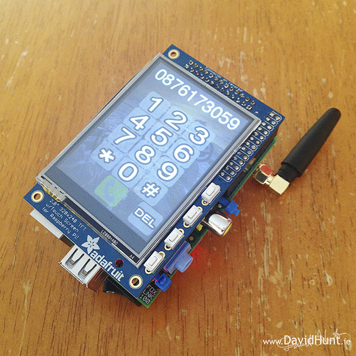
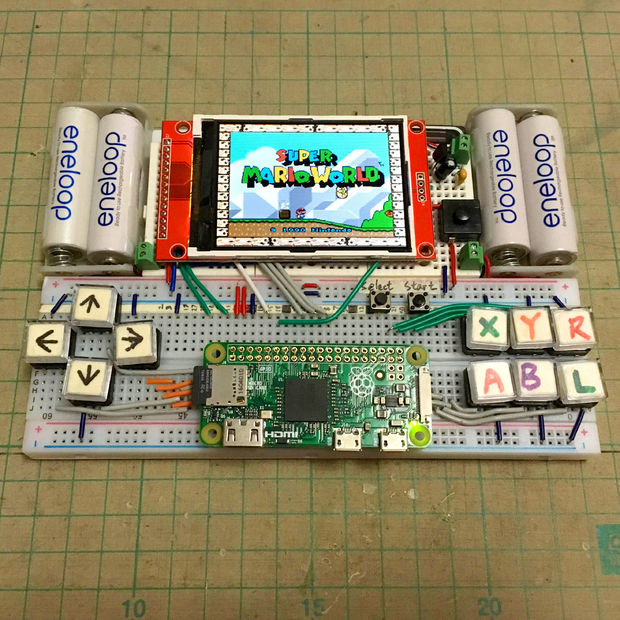
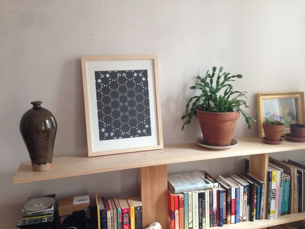
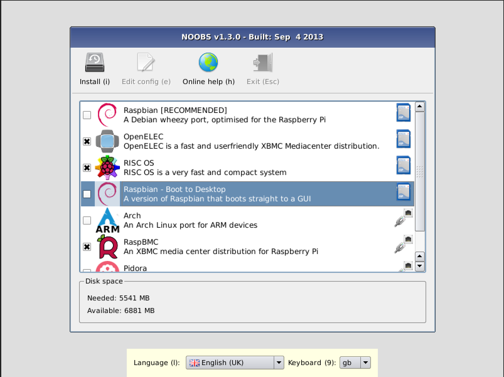
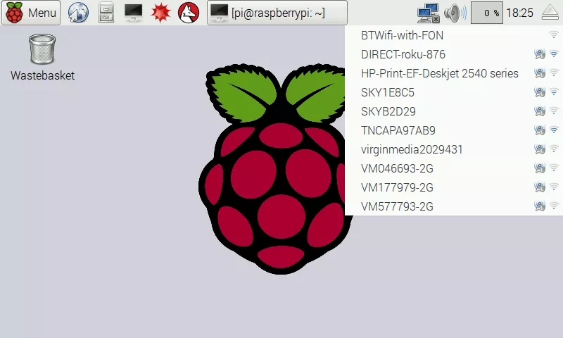
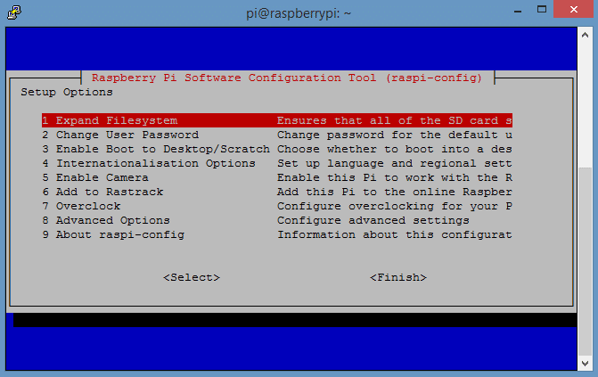

The Raspberry Pi is a low cost, credit-card sized computer that plugs into a computer monitor or TV, and uses a standard keyboard and mouse. It is a capable little device that enables people of all ages to explore computing, and to learn how to program in languages like Scratch and Python. It’s capable of doing everything you’d expect a desktop computer to do, from browsing the internet and playing high-definition video, to making spreadsheets, word-processing, and playing games.
PiPhone
 http://www.davidhunt.ie/piphone-a-raspberry-pi-based-smartphone/Retropi
 https://retropie.org.uk/Openframe
 https://openframe.io/Setting Up
Connecting to Wifi
sudo raspi-config
sudo apt-get update
sudo apt-get upgrade
Install NodeJS:
sudo apt-get npm
sudo npm install n -g
sudo n latest
Install Netatalk
Sudo apt-get install netatalk
Connecting via ssh
SSHInstall Git
Git clone https://github.com/mhellar/websocket_arduino_anims